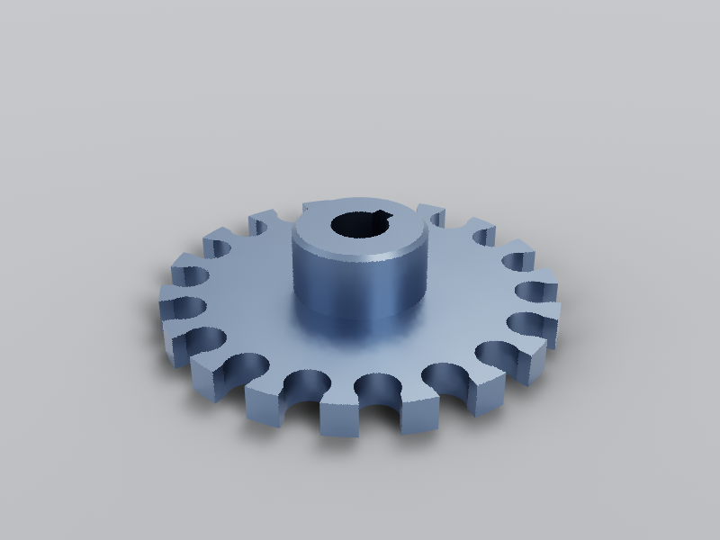

05-sprocket
A roller-chain sprocket (08B, 12.7 mm pitch): roller seats cut round a disc by a polar pattern, a hub on one side, a 12 mm bore with a 4 mm keyway and an M5 set-screw hole through the hub.

Source
Run it with cad run examples/dogfood/05-sprocket.ts.
// A roller-chain sprocket (08B, 12.7 mm pitch): roller seats cut round a disc by a polar pattern,
// a hub on one side, a 12 mm bore with a 4 mm keyway and an M5 set-screw hole through the hub.
import { box, circle, cylinder, model, param, sel } from "@cad/sdk";
export const sprocket = model("sprocket", () => {
const teeth = param("teeth", 18, { min: 9, max: 40, step: 1, unit: "count" });
const pitch = 12.7, roller = 8.51, plate = 7.2;
const pcd = pitch / Math.sin(Math.PI / teeth); // pitch circle diameter
const tip = pcd / 2 + 0.6 * roller;
const disc = circle(tip).extrude(plate);
// a roller's seat and the gap it enters by: a round at the pitch circle opening outward
// (tools centred on z = plate / 2 and three plates tall, so they cut through)
const seat = cylinder(roller / 2 + 0.1, plate * 3).fuse(box(10, roller * 0.9, plate * 3, { align: ["min", "center", "center"] }))
.translate(pcd / 2, 0, plate / 2);
const hub = cylinder(14, 14, { align: ["center", "center", "min"] }).translate(0, 0, plate);
const bore = cylinder(6, 60); // centred on z = 0: through all
const key = box(4, 3, 60, { align: ["center", "min", "center"] }).translate(0, 5, 0);
const setScrew = cylinder(2.5, 20).rotateX(-90).translate(0, 0, plate + 7);
return disc
.cut(seat.polarCopies(teeth))
.fuse(hub)
.chamfer(sel.radius(14).and(">Z"), 1) // the hub's top rim
.cut(bore, key, setScrew)
.label("sprocket", { color: "#718096", material: "steel" });
});
if (import.meta.main) await sprocket();